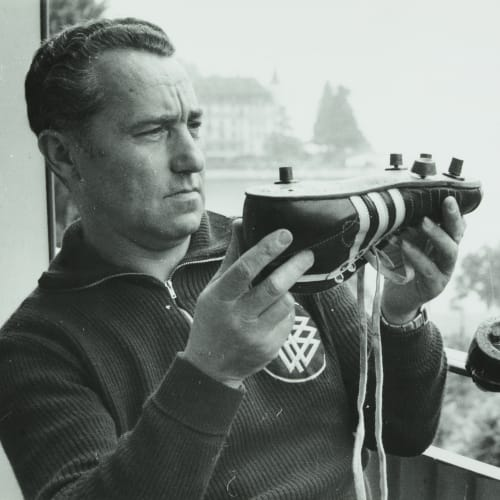

adidas brand momentum drives record revenues, strong third-quarter results, and upgrade of full-year 2025 outlook
Results
Read More1/2
Press releases

“We started in a laundry room and conquered the world.”
We’ve improved and grown. Looking ahead to the future, always remembering where we came from. This is our story.
DISCOVER THE ADIDAS LEGACYLATEST BRAND NEWS
VISIT OUR BRAND NEWS SITEsustainability
see allIt starts with you
join usKEY FACTS 2024

October 30, 2025 • press releases
adidas announces successful placement of € 500 million bond
October 29, 2025 • press releases
adidas brand momentum drives record revenues, strong third-quarter results, and upgrade of full-year 2025 outlook
October 21, 2025 • press releases